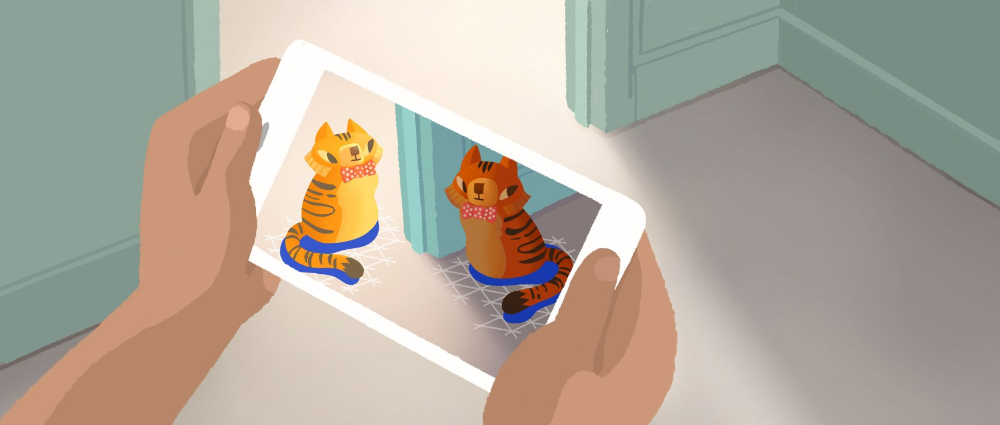

ARCore 进化史：从"能跑"到"好用"，Google 这八年在死磕什么
运动跟踪、深度感知、光照估算——ARCore 五大核心能力的迭代脉络，以及从实验室 Demo 到生产级框架的产品演进逻辑
我第一次接触 ARCore 是在 Google I/O 的一个 Demo 里，手机对着茶几晃了晃，桌面上就稳稳地站了一个 3D 小人。那时候觉得"这东西酷归酷，就是不知道什么时候才能真的好用"，后来跑去它的官网蹲了好几个版本更新。
回头看，这其实就是 ARCore 整个进化史的一个缩影：底层能力先搭起来，然后一层一层往上补体验，最后才轮到性能和功耗这种"工程债"。样本文档没给具体的版本号时间轴，我只能从功能模块的成熟度反推它的迭代顺序——但这个顺序本身就挺有意思的，能看出 Google 做 AR 的优先级。想动手跑一遍的话，SDK 和测试用的示例应用都能从官方下载拿到。
起步：先让手机"知道自己在哪"
ARCore 的地基是运动跟踪。它要解决的第一个问题不是"怎么放虚拟物体"，而是更根本的"手机动了之后，虚拟物体怎么不跟着飘"。
这个阶段的核心是视觉 + IMU 融合的 SLAM：摄像头画面提取特征点，IMU 高频采样加速度和陀螺仪数据，两路数据用滤波算法合成一条平滑的姿态轨迹。样本文档把这一层叫"五大核心能力"之首——不是巧合，没有姿态跟踪，后面所有功能都是空中楼阁。
这时候的 ARCore 其实还挺原始的：平面检测只找水平大平面（桌子、地面），光照估算只有一个平均光强值，Hit Test 也只是简单的射线平面求交。Demo 好看，但一进真实场景就露怯——纯纹理的白墙面检测不到平面，光照一变虚拟物体的颜色就不对。
第一个转折点：让虚拟物体"融入"真实世界
如果说运动跟踪是"站稳脚"，那光照估算和深度感知就是"长像"。
光照估算的进化路线很清晰：先输出一个 Average Light Intensity 对付基础明暗，然后加了 Color Correction 处理色温偏暖偏冷的问题，最后上了 HDR 光照估算，直接输出一张环境贴图让 3D 物体反射周围真实环境的光。这个功能的打磨持续了好几个版本——样本文档里还在提醒开发者"不需要 HDR 就关掉省功耗"，说明 HDR 虽然好，但性能开销一直是个 trade-off。
深度感知（Depth API）的出现更晚。它在每一帧生成一张和摄像头同分辨率的灰度深度图，每个像素值就是该点到相机的距离。有了这张图，才能做到遮挡渲染——虚拟球滚到桌边真的会停下来而不是穿模掉下去，虚拟人物站在墙前就不会被墙"吃掉"。Depth API 最有意思的地方是它对硬件的依赖：有 ToF 传感器的手机直接拿硬件深度图，没有的就靠运动立体匹配（被动深度），Google 把两条路都做通了，这点挺厚道。

交互层：从"放上去"到"随时放"
Hit Test 是 AR 应用最常用的交互机制——用户点一下屏幕，从相机位置投一条射线，射线穿过的第一个平面就是放置位置。这个功能本身不复杂，但 ARCore 在它上面叠了一个挺重要的体验改进：即时放置（Instant Placement）。
传统 Hit Test 的流程是"等平面检测完成 → 用户点击 → 放置"，用户经常需要举着手机扫一遍房间才能开始玩。Instant Placement 把这个顺序反过来：用户一点击就先放一个虚拟物体，然后后台持续跟踪精度提升，自动修正物体的位置和姿态。这个改动不大，但体验上的差别是质的——从"等系统准备好才能玩"变成"想玩就玩"。
Augmented Images 图像识别的加入，则让 ARCore 从"只能在空白桌面上放东西"进化到"可以扫描特定物体触发内容"。扫描电影海报弹出角色动画、扫描产品包装叠加 3D 模型，这些场景都靠它。有意思的是它和 Vuforia 的对比：精度不如专业级 Vuforia，但免费、和 ARCore 无缝集成，对于大多数不需要 3D 物体识别的项目来说已经够用了。
后期补课：性能和功耗
我注意到样本文档里有整整两章在讲 FPS 优化和电池消耗——这在早期 ARCore 的文档里是看不到的。这说明 Google 终于开始认真对待"量产"这件事了。
AR 应用是唯一一个让手机摄像头 + CPU + GPU + IMU + 屏幕全负荷运转的应用类型，功耗轻松超过 15W，10 分钟就消耗 2.47Wh，可用时间不到 1.5 小时。样本文档给的优化清单里，"降低渲染分辨率到 75%"排第一，GPU 功耗直接降 44%；帧率自适应（温度 <40°C 跑 60fps，>45°C 降到 24fps）是第二；关闭不需要的 API（Depth API 不做遮挡就关掉，能省 15~25%）是第三。
更让我意外的是，样本文档里甚至写了后台挂起必须完全暂停 ARCore、屏幕亮度强制降低 20~30%、计时 + 降温提示这些细节。这些都不是"核心功能"，但决定了 AR 应用能不能真正被用户留在手机里。
迭代规律：死磕底层，不急着堆功能
把这些模块放在一起看，ARCore 的迭代节奏有一个很明显的倾向：底层能力先吃透，上层功能再展开。
运动跟踪和平面检测这一层花了最长的时间打磨——从最早只有水平平面，到后来支持垂直、倾斜平面，再到边界检测（尽量检测平面的实际物理边界而不是假设无限大），每一步都在"让基础能力更可靠"。深度感知也是等运动跟踪稳了之后才上的，Instant Placement 本质上是运动跟踪精度够了才能做的体验改进。
另外一个持续在做的事是性能优化体系的建设——从早期靠开发者自己摸 GPU Profiler，到后来 ARCore 自带 Debug Overlay 可视化 SLAM 状态和平面，再到现在的功耗分级策略（旗舰完整遮挡、中端简化遮挡、低端关闭遮挡），Google 在一点一点把"做一个好 AR 应用"这件事从玄学变成工程化。
有一件事一直没怎么变：对硬件差异的包容。ToF 深度和被动深度两条路都走、平面检测在无纹理场景自动降级、遮挡渲染按设备分级——这些都是同一个思路：让 ARCore 在尽可能多的设备上跑起来，而不是只服务顶配机型。
下一步会怎么走
从这个迭代节奏往下推，我觉得有几个方向大概率会继续投入。一个是SLAM 在复杂场景的鲁棒性——现在纯白墙面还是检测不到平面、透明玻璃几乎无解，这些 corner case 会一点一点被填上。另一个是和地理定位的更深融合，样本文档里已经提到了 Geospatial API，把 AR 锚点绑到 GPS 坐标上，未来应该会看到更多"出门就能用"的场景。
至于什么时候 AR 应用的体验能追上原生 App，我不敢说具体时间点。但从 ARCore 这八年的进化逻辑看——先站稳脚、再长像、然后优化交互、最后补课性能——它走的是一条踏实的路，每一步都没跳过。这个节奏本身就是一个信号：Google 不是在做一个炫技的实验，是在搭一个能用的基础设施。
如果你想跟着这套框架动手，整套 ARCore 的资料我都做了整理，文档里每个 API 都配了 Kotlin 和 Unity 的代码示例。需要查阅的话，这些资料在三个地方都能拿到——GitHub 是主仓，Gitee 和 GitCode 是备份镜像，哪个通就用哪个。